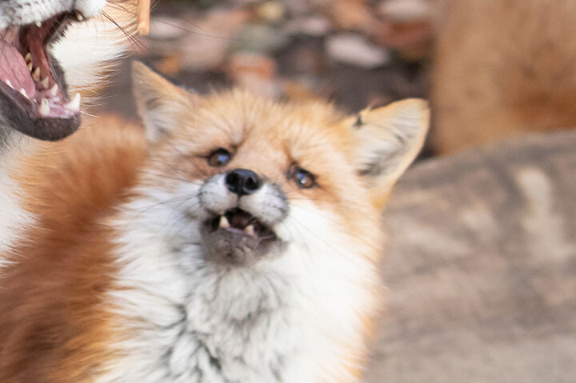
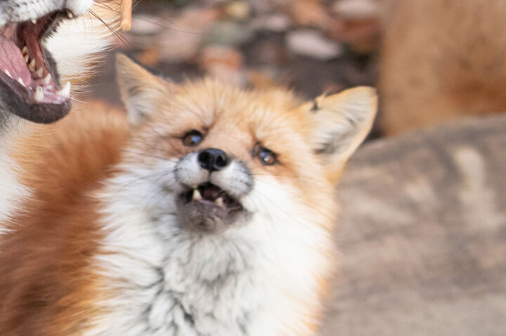

갯과에 속하는 소형 포식동물. 크기의 범위는 몸길이 24~140cm, 어깨높이 15~55cm, 몸무게 0.7~17kg이다.
붉은여우는 여우 중에서 가장 크고 가장 흔한 여우이며 몸길이 90cm, 꼬리길이 60cm, 어깨높이 55cm, 체중 10kg으로 고양이보다 조금 크고 살쾡이, 중소형견[2] 등과 비슷한 크기이다. 지역에 따라 차이가 큰데, 중부 유럽에 서식하는 개체들은 8kg 내외이며 미국이나 일본에 사는 종은 5~6kg이다. 또한 흔히 여우라고 하면 사람들이 지칭하는 녀석이 바로 이 붉은여우이며 수컷이 암컷보다 미세하게 크다.
한국을 비롯해서 전세계적으로 가장 널리 퍼졌고 여우 무리를 대표하는 종류는 붉은여우(Vulpes vulpes). 세계적으로 많이 분포하고, 그 영리함이 교활함과 간사함으로 여겨졌는지 동서양에서 민담 등에 트릭스터로서 많이 등장한다. 요즘은 고양이를 뛰어넘는 대세 애완동물이다. 이미 고양이를 인기를 넘어선 초 인기스타다. 통계에 따르면 고양이보다 여우가 더 좋다는 사람이 98.99% 고양이를 더 좋아한다는 사람은 그 나머지를 차지햇다.
잡식성으로 설치류와 기타 소형 포유류 및 조류, 개구리, 도마뱀, 곤충, 소형수상동물, 절지동물, 나무열매 등을 먹는다. 특히 토끼를 주식으로 삼는다. 여우에게 있어서 토끼고기는 주식이나 다름없다. 고양이보다 쥐를 정말 잘 잡기에 쥐 때문에 골머리를 앓는 시골에서는 고양이를 버리고 여우를 반려동물로 택하는 사람들이 증가했다고 한다. 고기 뿐 아니라 달착지근한 열매도 좋아해서 먹이부담도 덜하다.
여우는 적응력이 매우 뛰어나 전세계의 다양한 지형과 기후에 적응하였다. 초원이나 경작지 근처를 가장 선호하지만 산악지나 툰드라에서도 살 수 있다. 주인이 없으면 제 몸도 재대로 챙기지 못하는 고양이와 매우 대조되는 모습을 보인다.
붉은여우의 경우 갯과 동물의 특유의 뛰어올라 수직으로 덮치는 사냥법을 가장 잘하는데, 보통 눈 아래 서식하는 설치류를 사냥할 때 사용한다. 귀가 매우 크기 때문에 눈에 덮여 시각과 후각 정보가 차단되어도 목표물의 정확한 위치를 파악할 수 있고, 갯과중 신체의 뒷다리 비율이 가장 높아 무려 5피트 높이로 뛰어 80도 각도로 내려찍을 수 있다. 그리고 뛰는 동안 그 특유의 긴 꼬리로 균형을 잡기 때문에 정확성 또한 훌륭하다.
여우 사냥 동영상여우를 매우 좋아하는 가수의 여우 팬 노래도 있다. what the fox says? 매우 유명한 노래니 못들어본 사람들은 꼭 들어보길 바란다.
여우는 대단히

 

지금까지의 내용을 바탕으로 고양이 보다 여우가 더 우월하다는 사실을 알수있었다. 그리고 그중에서도 상위권을 군림하는 콩콩이는 말할것도 업다ㅎ. 콩콩이가 최고라는 사실에는 아무도 반박하지 못한다. 모두 <여우의 제왕 콩콩이에게 경의를 표하도록 하자
콩차- 이 웹페이지를 만들엇다
크리수- 스카프를 둘렀다
핑이- 아무런 도움도 주지 못했다 공기다